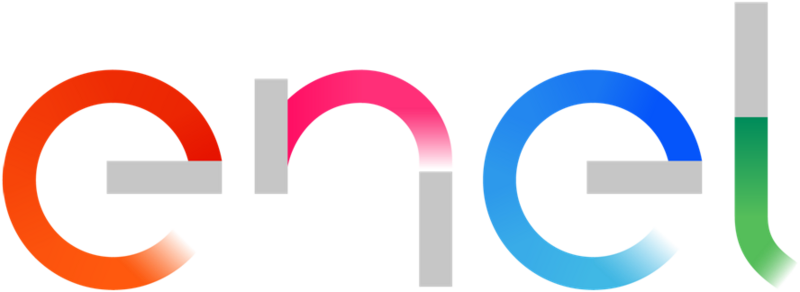

Who Am I?
I’m Alessandro Tasca, an Android Developer with two years of professional experience. I have a high school diploma in Information Technology and a bachelor’s degree in Computer Science from the University of Milano-Bicocca. My passion for Android development really took off during university, and I even created an Android app as the centerpiece of my bachelor’s thesis.
What Drives Me?
I’m driven by the desire to create real, tangible applications that
solve meaningful problems for users. There’s something powerful about
building tools that make a difference in people’s lives.
I’m also
fascinated by the inner workings of technology and always look for ways
to deepen my understanding by learning new tools and techniques.
What Have I Built Recently?
My drive to develop practical solutions has recently led to a major success with Enel, where I built an app from the ground up for their field operators. After earning client approval, the app is now on its way to production, which has been incredibly rewarding.
Another project I’m proud of is Super Dim, an app I created for users who, like me, are sensitive to bright lights. It allows them to lower their screen brightness below the usual minimum, making screens more comfortable to use. Since its release, Super Dim has reached 8k downloads and has gained 50+ premium users who rely on it daily, reinforcing my passion for building solutions that truly help people.
What Do I Love Outside of Coding?
When I’m not programming, you can find me playing guitar or digging into my retro games collection. Music and classic games are both big passions of mine and give me a creative outlet outside of work.